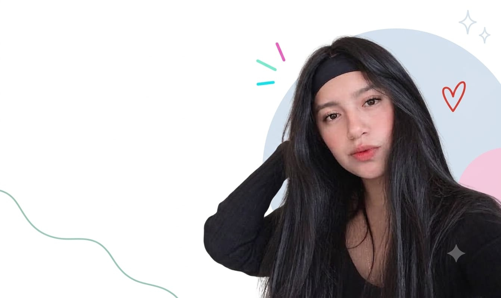
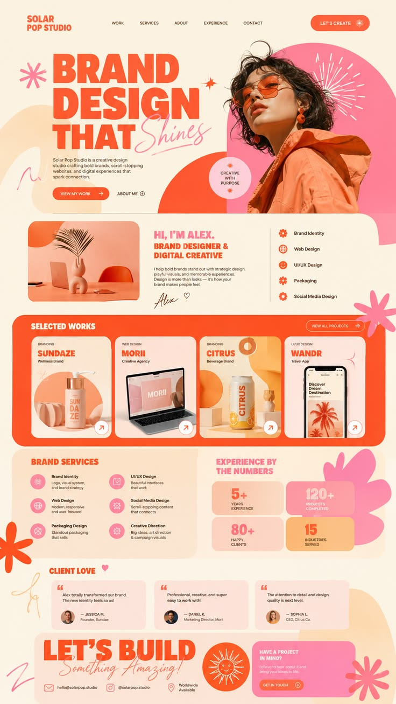
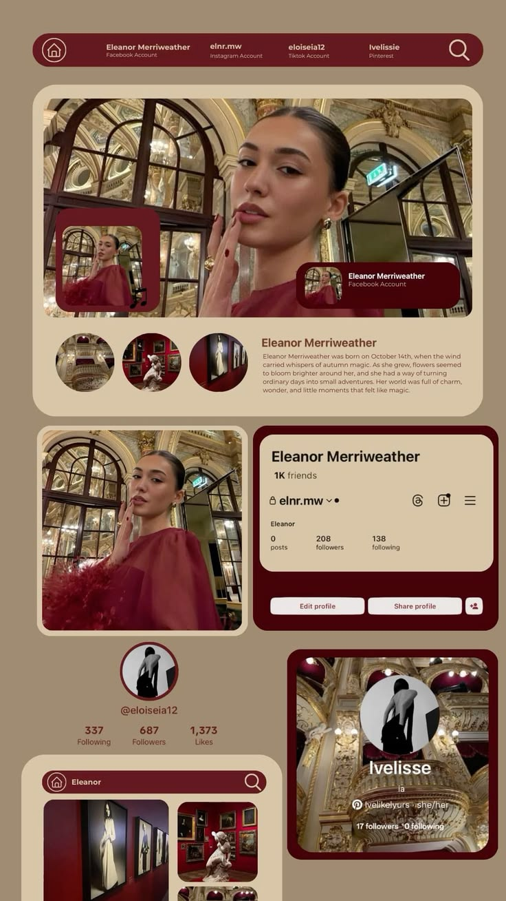
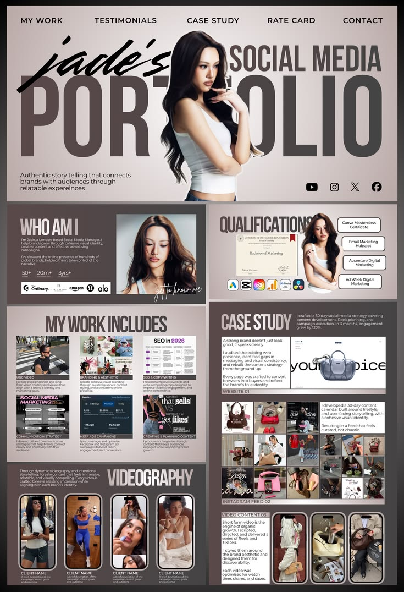
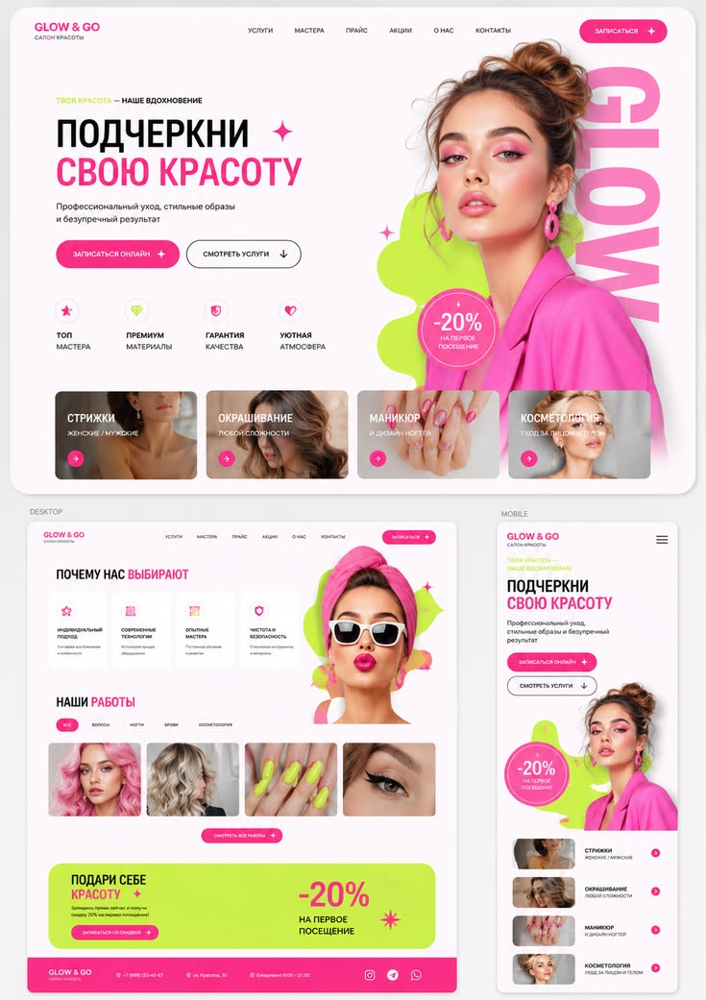
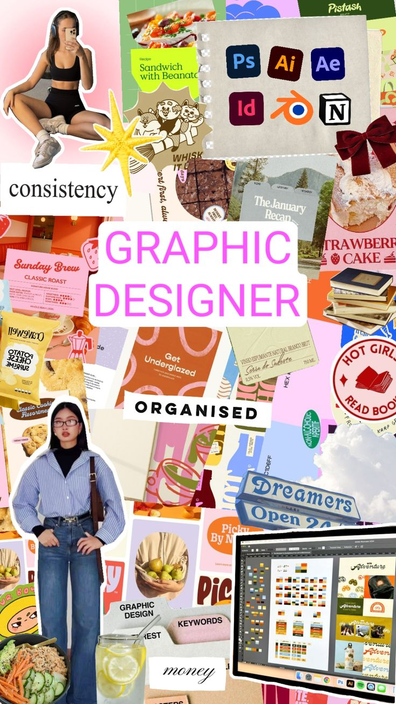
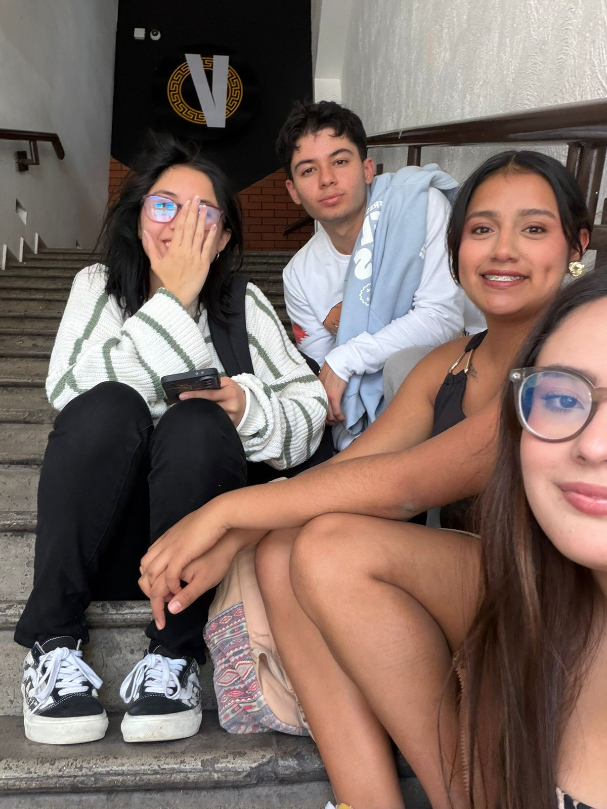
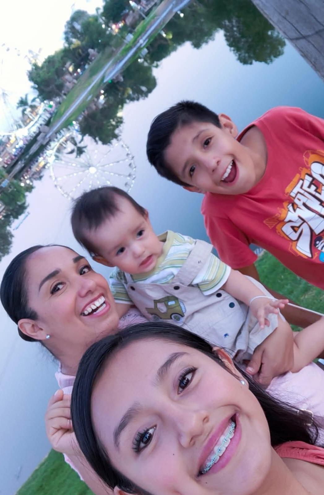
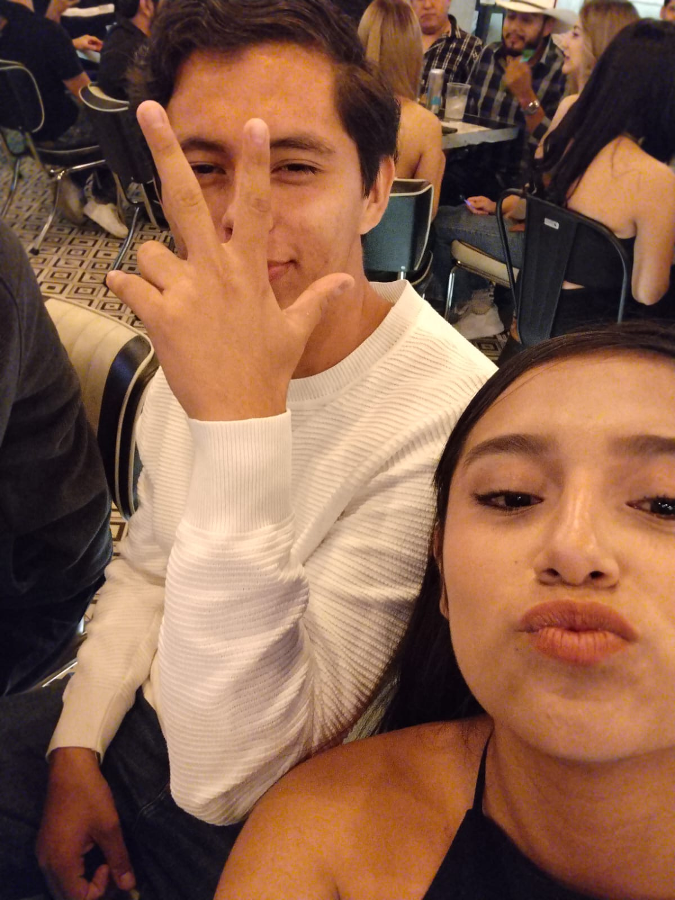
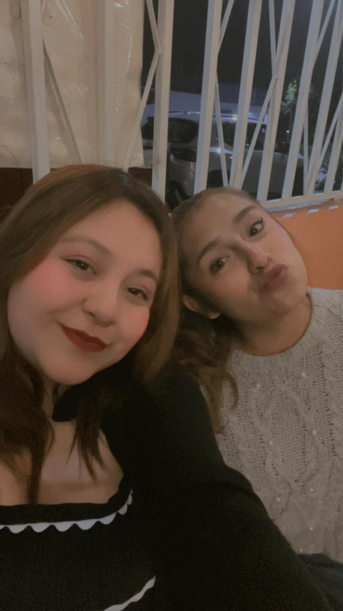

01. IDEA
Conozco las necesidades y objtivos del proyecto.
hola, soy
Apasionada por el diseño, los colores, la tecnología y la creacion de sitios digitales.
Ubicacion
de experiencia
proyectos realizados
y comprometida
constante aprendizaje
AGUASCALIENTES, AGS.
Conozco las necesidades y objtivos del proyecto.

Desarrollo de identidad visual y propuesta digital para mi emprendimiento.

Colecciones de inspiracion para proyectos de diseño, redes y contenido creativo.

Colecciones de inspiracion para proyectos de diseño, redes y contenido creativo.




Mi inspiración nace de observar todo lo que me rodea: los colores, las formas, la naturaleza, la fotografía, la tecnología y las pequeñas ideas que encuentro en el día a día. Me gusta combinar diferentes estilos y elementos para crear diseños que no solo sean visualmente atractivos, sino que también transmitan una idea y tengan un propósito.

¿Tienes una idea para un sitio web? Cuéntame qué necesitas y trabajemos juntos para convertirla en una propuesta creativa y funcional. Cada proyecto se diseña pensando en tus objetivos, tu estilo y la forma en que quieres conectar con tus visitantes.
Un buen sitio web no solo debe verse bien, también debe ser fácil y agradable de utilizar. Por eso, cada diseño busca ofrecer una navegación sencilla, una estructura clara y una experiencia visual que permita a los usuarios encontrar lo que necesitan de manera rápida y cómoda.
En este espacio puedes conocer algunos de los proyectos y trabajos que he realizado durante mi formación como diseñadora web. Encontrarás diferentes propuestas de diseño, estilos y recursos que muestran mi creatividad, mis habilidades y la evolución de mi trabajo a lo largo del tiempo.



